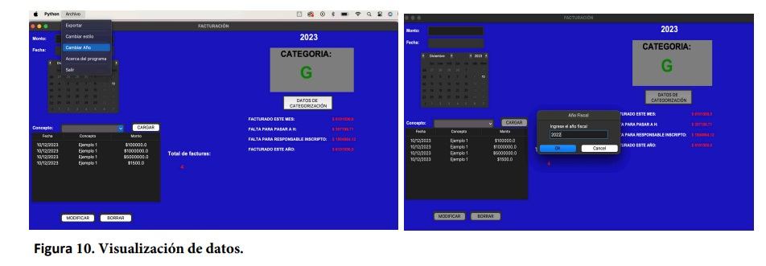

Manual de Usuario
Introduccion
La aplicación Control de facturación está desarrollada para realizar un control de facturación para monotributistas argentinos. Fue desarrollada en el lenguaje Python usando la interfaz gráfica Tkinter, como trabajo final para el curso Python intermedio del centro de E-Learning de la UTN.BA en el año 2023.
Manual de usuario
La aplicación consta de dos ventanas, el menú principal, donde se realizan todas las funciones principales y la ventana datos de categorización, donde se modifican los datos para calcular las categorías del monotributo. Las funciones que podrá controlar el usuario son cargar datos, borrar datos, cambiar el estilo, modificar datos de categorización, exportar los datos a una planilla de Excel y visualizar la información del programa.
Cargar datos
Para cargar datos el usuario debe ingresar los datos del monto que se facturo (1), la fecha de facturación (2) y el concepto de la facturación (3), como se muestra a continuación en la figura 1.
El monto que se ingresa en la caja de texto solo puede ser de valor numérico, mientras que el valor del concepto solo puede corresponder a una opción la lista desplegable. El usuario puede crear los conceptos con los cuales factura, a su vez puede eliminarlos. La fecha se elije desde el calendario. (figura 2).
Luego de ingresar los datos, se hace clic en el botón cargar. En caso de no haber ningún error, los datos ingresados serán guardados en la base de datos, se mostrarán en la tabla del menú principal y se actualizarán los datos y categorías correspondiente al monotributo (figura 4).
A medida que se cargan los datos, la categoría se actualiza automáticamente y va variando según los montos facturados en el periodo designado. En el caso que la facturación esté llegando al límite del monotributo, se actualizará la categoría a la última (H) y cambiara de color verde a rojo, para que el usuario no se pase de categoría a responsable inscripto (figura 5).
Borrar datos
Para borra algún registro de la base de datos, se debe hacer clic en la tabla, sobre el registro que se desea borrar y a continuación aparecerá un mensaje preguntando si esta seguro que se desea borrar el registro. En el caso de que se haga clic en SI, el registro se borra de la base de datos, en el caso que se haga clic en NO, se cancela la función borrar. Si el usuario no hace clic en ningún registro de la tabla y acciona el botón borrar, aparece un mensaje avisando que se debe seleccionar el registro que se va a borrar (figura 6, flechas verdes)
Cambiar estilo
En caso de que el color de fondo, no sea de agrado del usuario, existe la posibilidad de cambiar el estilo. Para ello se debe hacer clic en el menú y a continuación presionar cambiar estilo. Esto abrirá un panel de colores para que se decida qué color se desea visualizar. (figura 7). El color se guardará en la base de datos para las próximas aperturas de la aplicación.
Modificar Datos
Para modificar algún dato registrado se debe presiona sobre el mismo en la tabla y hacer clic sobre el botón modificar. Se actualizaran los datos en los widgets de entrada (Flechas rojas). Allí se podrán modificar los datos y aparecerá un botón (flecha verde) para guardar los cambios (figura 8)
Exportar datos a una planilla de Excel
Es posible exportar los datos de la facturación a un archivo de Excel (.xls) para ellos se debe hacer clic en archivo y luego exportar. Se abrirá una ventana con el directorio donde se desea guardar el archivo.xls. Luego de realizado se avisará mediante un mensaje que la exportación ha sido exitosa.
Visualizar información del programa
Si se hace clic en el menú información, se desplegará la opción de hacer clic sobre acerca del programa. Si se presiona, aparecerá un mensaje con datos acerca de la creación de la aplicación, su autor y un agradecimiento. (figura 9)
Visualizar datos
Los datos que se muestra en la tabla corresponden al año que se visualiza por encima de la categoría en la esquina superior derecha de la pantalla. Para visualizar los datos de otros años se debe presionar la opción cambiar año en archivo (figura 10)
